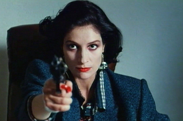
Assumpta Serna - María
Antonio Banderas - Ángel
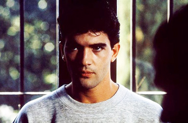
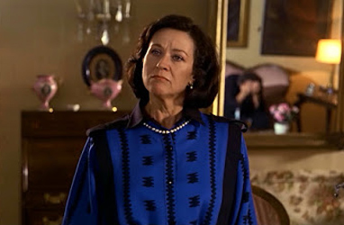
Julieta Serrano - Berta
Eva Cobo - Eva
Chus Lampreave - Pilar
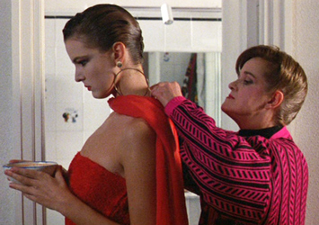
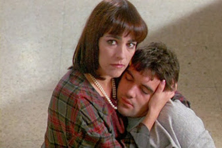
Carmen Maura - Julia
Bibiana Fernández - Flower seller
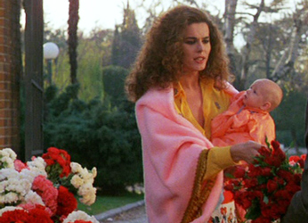
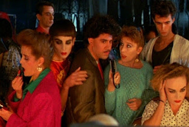
Verónica Forqué - Journalist
Commissar
Asistant to María and Diego
Secretary to María
Student 2
Student 4
Type 2
Faithful
Priest
TV Announcer
ENT
Francisco Montesinos
Agustin Almodóvar - Policeman 2
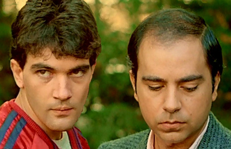
Diego Montes is a former bullfighter who was forced into early retirement after being gored. He finds sexual gratification by viewing slasher films. Among the students in his bullfighting class is Ángel, a diffident young man who suffers from vertigo. During one episode of vertigo in the practice ring, Ángel has a vision of a woman killing a man with a hairpin during sex, in a manner similar to how a matador kills a bull. After class, Diego asks Ángel if he is homosexual, noting that he is not experienced with women. Ángel says he is not and vows to prove himself. Later that day, Ángel attempts to rape his neighbour Eva, who is also Diego's girlfriend. As she leaves him, she trips in the mud and gashes her cheek. At the sight of her blood, Ángel faints.
The next day, Ángel's mother insists that he go to church as a condition of living in her home. After mass, she insists that he go to confession. He instead goes to the police station to confess to the rape. When Eva is brought to the station, she says he ejaculated before penetrating her and declines to press charges. Alone with the police detective, Ángel notices photos of dead men with the same wound administered by the woman seen during his earlier spell of vertigo. He confesses to having killed them. The detective then asks about two missing women, who were also students of Diego, and Ángel confesses to killing them as well.
Although Ángel is able to lead the police to the two women's bodies buried outside Diego's home, the detective is not convinced. He questions how Ángel could have buried them there without Diego's knowledge, finds that Ángel has an alibi for the murder of one of the men, and discovers that he faints at the sight of blood. Meanwhile, Ángel's lawyer, María Cardenal - the woman from Ángel's dream - suspects that Diego killed the two women. She takes him to a remote house where she has collected memorabilia related to Diego since she first saw him kill a bull. At Diego's home, Eva overhears the two and realizes that they are the killers. When María leaves, Eva tells Diego he has to take her back since she knows everything. Eva then goes to María to tell her to stay away from Diego, since Eva knows her secrets. María's reaction does not reassure Eva, and she goes to the police.
While Eva is telling the detective what she has heard, Ángel's psychiatrist calls the detective to tell him that Ángel has seen Diego and María in a vertigo trance, and that they are in danger. Ángel is able to guide them to María's house. Just as the police, Ángel, Eva, and the psychiatrist arrive, an eclipse begins and they hear a gunshot. María has stabbed Diego between the shoulder blades and shot herself in the mouth as they were making love. Viewing the scene, the detective says that it is better this way and that he has never seen anyone happier.
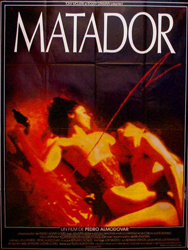
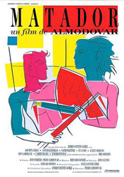
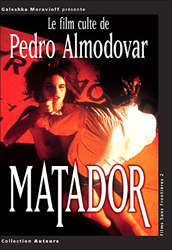
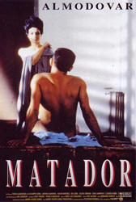
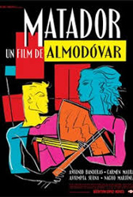